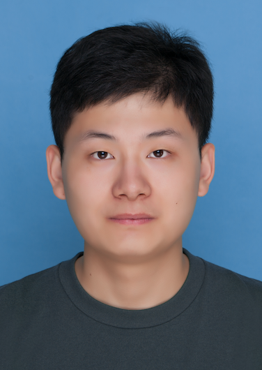

Shuo WangPh.D Student
Machine Translation Group |
 |
I am a third year Ph.D student at the Department of Computer Science and Technology (Dept. of CST) at Tsinghua University. I feel lucky to be advised by Prof. Yang Liu. Before that, I received my B.E. degree from the Dept. of CST, Tsinghua, in 2018.
My research interests are mainly in assessing and improving the reliability of modern neural networks, especially for neural machine translation.